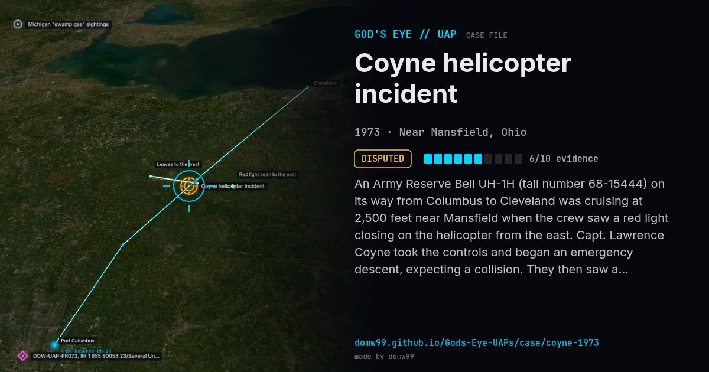

Coyne helicopter incident

An Army Reserve Bell UH-1H (tail number 68-15444) on its way from Columbus to Cleveland was cruising at 2,500 feet near Mansfield when the crew saw a red light closing on the helicopter from the east. Capt. Lawrence Coyne took the controls and began an emergency descent, expecting a collision. They then saw a cigar-shaped grey object hover over the helicopter, with a red light at the nose, a white light at the tail and a green beam that lit the cockpit. After it left, the crew found the helicopter at about 3,500 feet in a climb of 1,000 feet a minute, with the collective still fully down, and the compass spinning. The Army Reserve’s report is among the best-known official records of an aircrew encounter.
Explanation
The sceptic Philip Klass argued that the crew first saw a bright fireball of the Orionid meteor shower and then misjudged what followed. Investigators for CUFOS and others reject this: by their timeline the object was in view for several minutes, and a family on the ground reported lights too.
What was seen
Shape: Grey cigar-shaped body, red nose light, white tail light, green beam
Witnesses: Four-man Army Reserve crew; a family on the ground
Duration: About 5 minutes